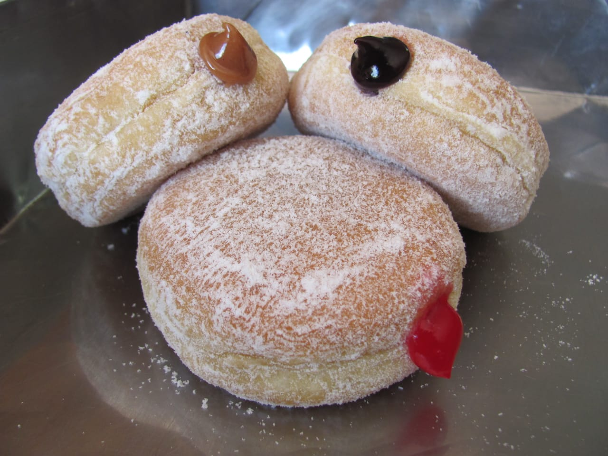

Las donas o donuts son una de las golosinas más famosas a nivel mundial. Actualmente existen miles de formas, sabores y cubiertas para estas pequeñas ruedas de masa cuyo sabor es único y espectacular. Sin embargo, su origen se remonta a unos cientos de años atrás.
 El nacimiento de esta perfecta creación se remonta a cuando los holandeses emigraron a América y se llevaron consigo varias tradiciones. Una de esas tradiciones fue el famoso olykoeks, oil cake en inglés. Estos eran unos bollos de masa que freían en aceite y se usaban para acompañar a los alimentos principales.
Sin embargo los olykoeks tenían un problema, mientras que los bordes se freían a la
perfección
el centro de
la masa quedaba crudo. En 1847 un marinero estadounidense llamado Hanson Gregory decidió buscar la
solución
al problema y luego de varios intentos tomo una lata y con ella le quito el centro a la masa. Así fue
como
nació la dona que todos conocemos. La masa quedo mucho más homogénea y podía freírse a la perfección.
Existen también teorías que dicen que a esta masa se le agregaban nueces y frutas para mejorar su sabor
y
por ello es que su nombre en inglés es Doughnuts que deriva de las palabras dough y nuts, masa y nueces
respectivamente. El primer registro escrito de la palabra » doughnut » data de 1809 en una publicación
de
Washington Irving, A History of New York. A principios de 1900, muchos habían acortado la palabra a
“donut”
tal como se conoce actualmente.
Según la Food Reference las donas comenzaron a prepararse de manera masiva en 1934 cuando un inmigrante
ruso
presentó la primera máquina para hacer donas de manera automática en una feria de Chicago, de allí en
adelante
se ha convertido en un producto comercial y delicioso.
Actualmente existen compañías como Krispy Kreme y Dunkin Donuts que encabezan el mundo de las donas en
Estados
Unidos. Este es un producto en crecimiento, con diferentes toppings, rellenos y colores que es consumido
en
grandes cantidades a nivel mundial.
Según la Food Reference las donas comenzaron a prepararse de manera masiva en 1934 cuando un inmigrante
ruso
presentó la primera máquina para hacer donas de manera automática en una feria de Chicago, de allí en
adelante se ha
convertido en un producto comercial y delicioso.
¿Antojado?, ¡Que esperas para probarlas!


Información nutricional
Cantidad por 100 gramos
- Calorías 452
- Grasas totales 25 g
- Ácidos grasos saturados 13 g
- Ácidos grasos poliinsaturados 2 g
- Ácidos grasos monoinsaturados 9 g
- Potasio 201 mg
- Proteínas 4,9 g
- Vitamina A 16 IU
- Vitamina C 1,3 mg
- Calcio 24 mg
- Hierro 4 mg